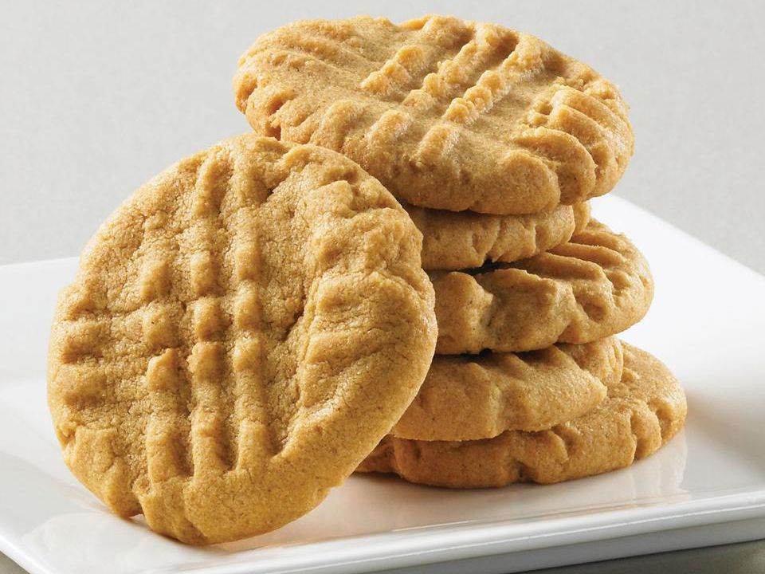

PB Cookies

Description
Soft, chewy, and bursting with peanut butter flavor, these classic
cookies are a timeless treat. Perfect with a glass of milk or as
a midday snack, they’re simple to make and impossible to resist!
Ingredients
- 1 cup Kraft Smooth Peanut Butter
- 1/2 cup sugar
- 1 egg
Steps
- Preheat oven to 325 degrees F.
- Mix all ingredients until blended.
- Roll into 24 (1 inch) balls. Place 2 inches apart on
baking sheet. Flatten each, in criss-cross pattern, with
tines of fork.
- Bake 15 minutes or until lightly browned (do not overbake).
Cool on baking sheets 5 minutes. Remove to wire racks; Cool
completely.